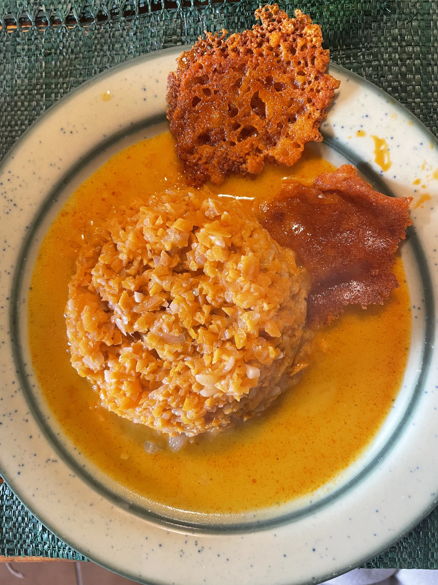

Falso risotto de boniato con idiazabal y parmesano
Ingredients
2×
- 1 boniato grande
- 1 cebolla
- aceite de oliva
- caldo de verduras
- 40 g de queso idiazabal
- 40 g de parmesano

Preparación
Paso 1
Rallar o picar muy fino 1 boniato grande, hasta que quede como granos de arroz.
Paso 2
Sofreír 1 cebolla picada con aceite de oliva, añadir el boniato y cocer removiendo, añadiendo caldo de verduras poco a poco, hasta que esté tierno y cremoso (unos 15min).
Paso 3
Fuera del fuego, mantecar con 40 g de queso idiazabal y 40 g de parmesano rallados. Salpimentar.
Paso 4
Opcional: hacer tejas de queso en una sartén con un poco más de queso rallado y servirlas encima.